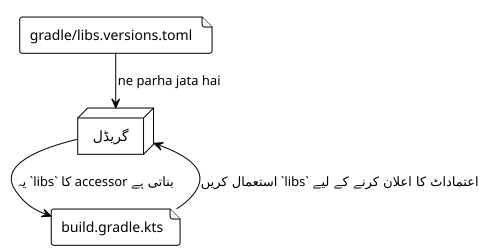
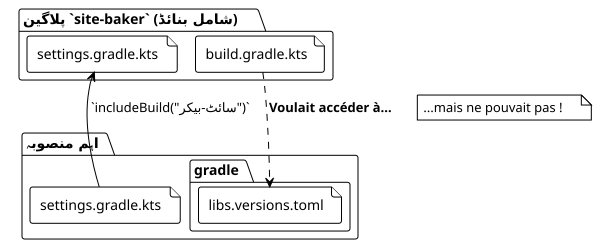

آرٹیکل 5: مشترکہ `libs.versions.toml` کی مہم
شائع شدہ: 27 September 2025
تعارف
پلاگ ان بنانے کی ہماری جستجو میں`site-baker`، ہم نے کوڈ بیس کو صاف ستھرا اور مرکزی رکھنے کی کوشش کی ہے۔ جدید Gradle ایکوسسٹم میں بہترین طریقوں میں سے ایک ہے … کا استعمالورژنز کا کیٹلاگ(libs.versions.toml) ڈیپینڈنسز کو مینیج کرنے کے لیے۔ لیکن کیا ہوتا ہے جب آپ کا پروجیکٹ زیادہ پیچیدہ ہو جاتا ہے، جیسے کہ ایککمپوزٹ بنائیںجہاں ایک آزاد بلڈ (ہمارا پلگ ان) کسی دوسرے میں شامل کیا جانا چاہیے؟
یہ وہ جگہ ہے جہاں ہمارا مغامت غیر متوقع موڑ لی۔ ہم چاہتے تھے کہ ہمارا پلاگ‑إن`site-baker`, یہ خود ایک گریڈیل پراجیکٹ ہے، ہماری اصلی پراجیکٹ کے برابر ورژن کٹیلاگ استعمال کرتا ہے۔ یہ مضامین، ہماریسلسلہ کا پانچواں مضامین، بتاتا ہے کہ ہم نے اس چیلنج کو کیسے حل کیا۔
1. ورژنوں کا کیٹلاگ (libs.versions.toml) : ایک یاد دہانی
فائل`gradle/libs.versions.toml`یہ Gradle کی ایک خاصیت ہے جو آپ کے پروジェکٹ کی انحصارات کے ورژن اور تنسیقات کو مرکزیت دے سکتی ہے۔ یہ عام طور پر چارsections (sections) میں منظم ہوتا ہے۔
-
[versions]: نسخے نمبروں کے لیے اسم مستعار بناتا ہے (مثل:`kotlin = "1.9.20"`). -
[libraries]: مکمل انحصارات کے لیے علیاسوں کا تعین کرتا ہے، اوپر کے تعریف کردہ ورژن استعمال کرتے ہوئے (مثال:`kotlin-stdlib = { module = "org.jetbrains.kotlin:kotlin-stdlib", version.ref = "kotlin" }`). -
[bundles]`کئی لائبريریاں ایک alias تحت collectiveorta ہے (مثال:`jackson = ["jackson-core", "jackson-databind"]). -
[plugins]: Gradle پلاگین کے لیے علیاس مقرر کرتا ہے۔
ایک بار تعریف ہو جانے کے بعد، Gradle خود بخود ٹائپڈ ایکسیسرز (typed accessors) تیار کرتا ہے، جو آپ کے`build.gradle.kts`بہت زیادہ پڑھنے کے قابل:
dependencies {
// Au lieu de : implementation("org.jetbrains.kotlin:kotlin-stdlib:1.9.20")
implementation(libs.kotlin.stdlib)
}
2. مسئله: ایک کمپوزٹ بنائ اور دو الگ عوالم
ہماری پروجييکٹ سٹرکچر ایکمرکب بنائیں.اہم پروژیکٹ (thymeleaf.cheroliv.com) پلاگین کا پروجیکٹ شامل ہے (site-baker) via la commande`includeBuild("site-baker")فائل میں`settings.gradle.kts.
۔کمپوزٹ بنڈ کی ساخت

مسئله یہ ہے کہ، ڈیفالٹ پر، شامل شدہ بنڈ ایک ہےالگ دنیا. اس کی اپنی تنظیمات ہیں، اپنی زندگی کا دور ہے، اور وہ فائل کو نہیں دیکھتا`libs.versions.toml`اہم بناؤ کا. ہمارا`plugin/build.gradle.kts`استعمال کرنے کی کوشش کر رہا تھا`libs.plugins.kotlin.jvm`، لیکن یہ چیز`libs`من مناسب TOML فائل سے پیدا نہیں کیا گیا تھا، جس سے بنڈلڈ ایررز پیدا ہو رہے تھے۔
3. حل: حتمیہ کا حل بٹانا
کئی تحقیق کے بعد، حل معلوم ہوا ایک Gradle کی خصوصیت جو مخصوص طور پر اس صورت کے لیے بنائی گئی ہے :`dependencyResolutionManagement`.
فائل میں`settings.gradle.kts` du build شامل(site-baker/settings.gradle.kts), ہم گرایڈل کو بتا سکتے ہیں کہ استعمال کرنے والا ورژن کیٹالوج کہاں مل سکتا ہے۔
یہ وہ کنفیگریشن ہے جو ہم نے … میں شامل کی ہے`site-baker/settings.gradle.kts`براہ کرم اپنی apiKey فراہم کریں۔
// site-baker/settings.gradle.kts
dependencyResolutionManagement {
repositoriesMode.set(RepositoriesMode.FAIL_ON_PROJECT_REPOS)
repositories {
gradlePluginPortal()
mavenCentral()
}
versionCatalogs {
create("libs") {
from(files("../gradle/libs.versions.toml"))
}
}
}
rootProject.name = "site-baker"
include("plugin")مہتوی حصے کا تجزیہ کریں:
versionCatalogs {
create("libs") { // Crée un catalogue nommé 'libs'
from(files("../gradle/libs.versions.toml")) // En utilisant ce fichier
}
}-
create("libs")`ہم ورژنوں کی ایک فہرست اعلان کرتے ہیں جو اس alias کے ذریعے قابل رسائی ہوگا۔`libs. -
from(files("../gradle/libs.versions.toml"))`یہ جادو ہے۔ ہم Gradle کو بتاتے ہیں کہ اس کیتالگ کا ماخذ TOML فائل ہے جو ڈائریکٹری میں واقع ہے`gradledu والدین کا پروجيٹ(../).
یہ کنفیگریشن کے ساتھ, بناؤ`site-baker`اب جان گیا ہے کہ اسے اساسی پروجيکٹ کے ورژن کیٹالوج استعمال کرنا چاہیے۔ چیز`libs`یہ صحیح طریقے سے پیدا کر دیا گیا ہے، اور 관련Mutfiq کر دیے گئے ہیں۔
4. نتیجہ : طاقتِ کامپوزٹ بیلڈز کی بہتر طریقے سے منظم
یہ تجربہ سیکھنے سے بھرپور تھا۔ ورژنوں کا کٹیلاگ رکھاوت کی قابلیت کے لیے ایک شاندار اہلاٹ ہے، لیکن composite builds کے سیناریو میں اس کا رویہ ہمیشہ واضح نہیں ہوتا۔
کلید یہ ہے کہ یاد رکھیں کہ ایک شامل بنڈ ایک独立 بنڈ رہتا ہے۔ ورژنوں کے فہرست جیسے ترتیبات کو شریک کرنے کے لیے، Gradle فراہم کردہواضح makaniizm استعمال کرنا ضروری ہے، جیسے کہ بلاک۔dependencyResolutionManagement`میں`settings.gradle.kts.
مسئلہ کو حل کرتے ہوئے، ہم نے نہ صرف اپنی build کو زیادہ صاف بنایا، بلکہ ہم نے اپنا project کی یکجائی کو بھی مضبوط بنایا، جس سے ہم یقین دلائے ہیں کہ پلاگین اور اصلی project apni dependedencies کے لیے ایک ہی سچائی کا مصدر (source) شریک کرتے ہیں۔
آئندہ مضمون میں، ہم اپنی پلاگین کو مزید پیچیدہ کاموں شامل کر کے اس میں اضافہ کرتے رہیں گے، حالانکہ ہمارا انحصارات کا انتظام مضبوط اور مرکزی ہو گیا ہے۔